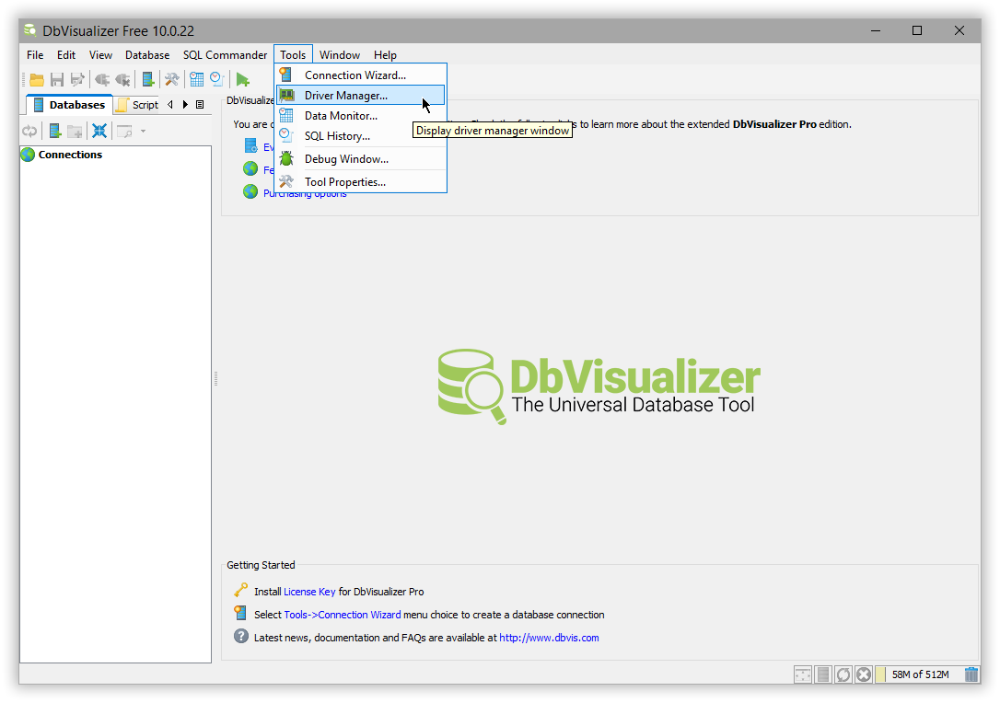
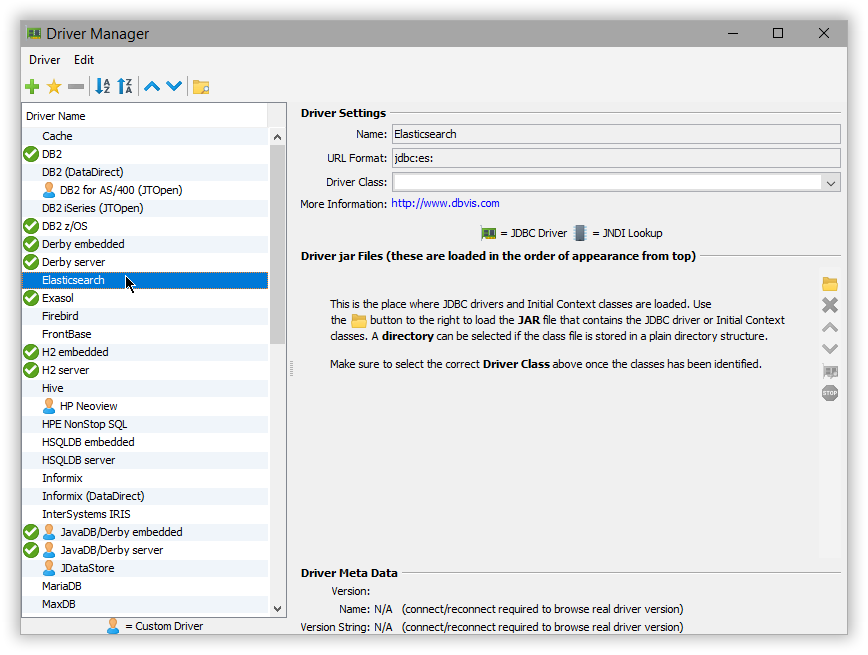
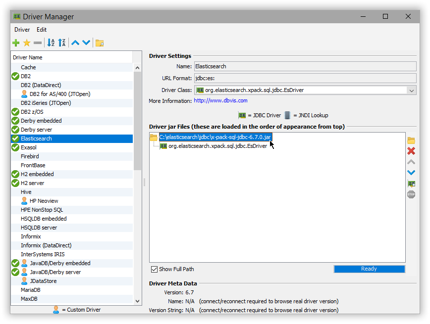
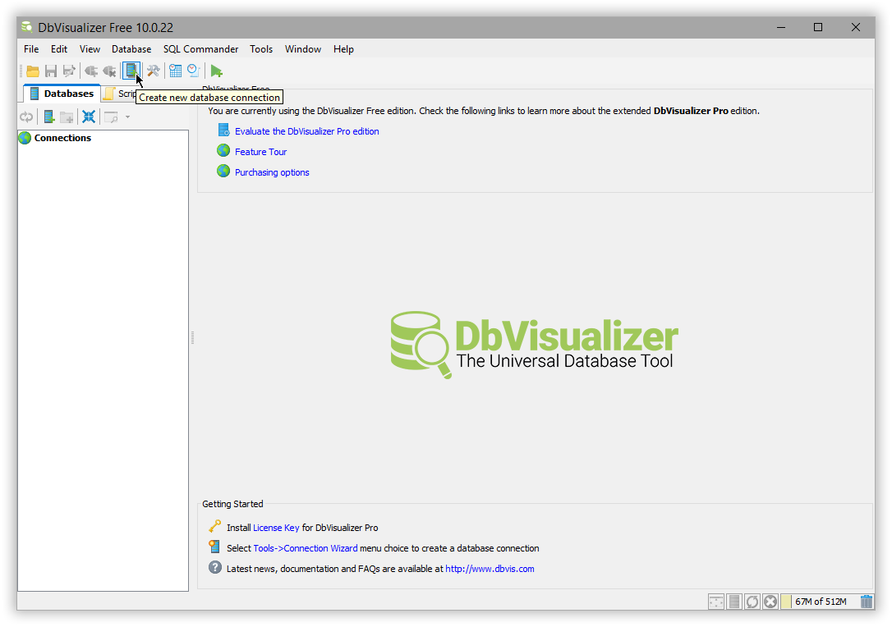
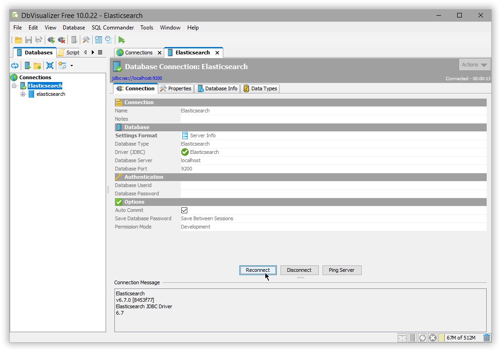
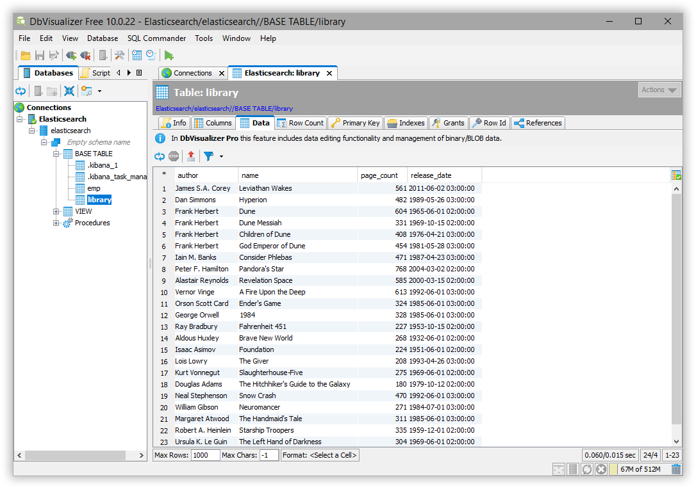

DbVisualizeredit
You can use the Elasticsearch JDBC driver to access Elasticsearch data from DbVisualizer.
Elastic does not endorse, promote or provide support for this application; for native Elasticsearch integration in this product, please reach out to its vendor.
Prerequisitesedit
- DbVisualizer 10.0.21 or higher
- Elasticsearch SQL JDBC driver
Add Elasticsearch JDBC driveredit
Add the Elasticsearch JDBC driver to DbVisualizer through Tools > Driver Manager:

Select Elasticsearch driver name from the left sidebar and add the JDBC driver in the files panel through the buttons on the right; if there is no such driver name check the DbVisualizer version or create a new driver entry through Driver > Create Driver.

Once specified, the driver class and its version should be automatically picked up - one can force the refresh through the Find driver in listed locations button, the second from the bottom on the right hand side:

Create a new connectionedit
Once the Elasticsearch driver is in place, create a new connection:

One can use the wizard or add the settings all at once:

Press Connect and the driver version (as that of the cluster) should show up under Connection Message.
Execute SQL queriesedit
The setup is done. DbVisualizer can be used to run queries against Elasticsearch and explore its content:
